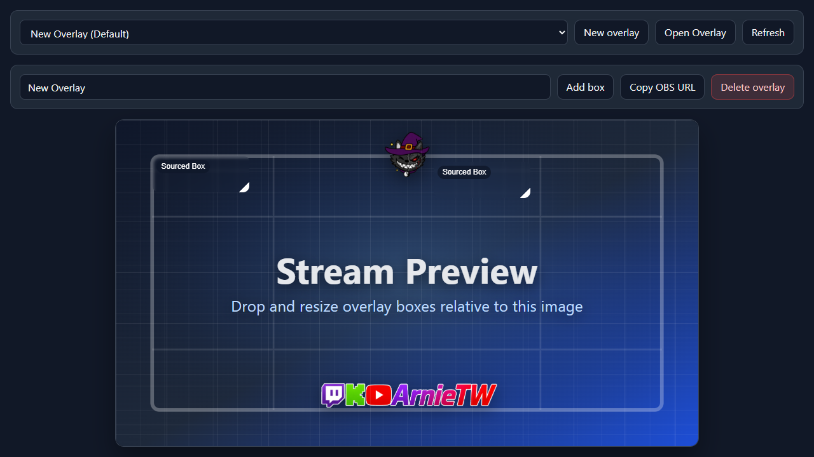
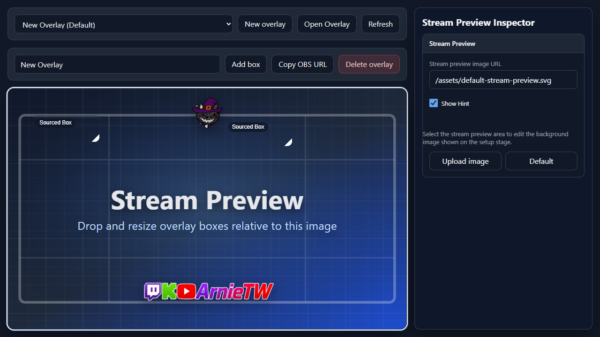

Inside Component
Overlay Component
The Overlay component is the top-level stream layer. It owns the OBS browser URL, the full-scene stage, and the boxes that decide where sources appear.
What It Controls
An overlay should be added to OBS as one full-scene browser source. NekoBot then uses boxes inside that overlay to show different memes, videos, sounds, text, TTS, and other cues.
Use one overlay for one stream layout. If your OBS scene has a different layout for gameplay, chatting, or BRB, create separate overlays for those scene layouts.
Saved Overlay Selector

Select saved overlay...New overlayOpen OverlayRefreshEmpty State
When no overlays exist, NekoBot shows a message instead of the editor. Create a new overlay first; the name field, stage, and box controls appear after there is an overlay to edit.
Editor Toolbar
Overlay nameMain Stream, Chatting, or BRB.Add boxSaveCopy OBS URLSet DefaultDelete overlayStage
The stage is the visual editing area for the overlay. It represents the stream canvas and lets you place boxes relative to what the audience will see.
- Stream preview image is the background reference for positioning boxes.
- Grid helps line up boxes cleanly against the stream layout.
- Overlay layer contains the boxes that will render in OBS.
The stage is an editor preview. OBS only needs the copied overlay URL; it does not need the setup page itself.
Overlay Inspector

Click the empty Stream Preview area on the stage to open the Stream Preview Inspector. This selects the overlay preview itself instead of a box. If you click a box, NekoBot opens the box inspector instead.
Stream preview image URLShow HintUpload imageDefaultExample
- Create an overlay named
Main Stream. - Add one box in the top-right corner for meme videos.
- Add one lower-third box for chat callouts or TTS captions.
- Save the overlay.
- Copy the OBS URL and add it to OBS as a browser source covering the whole scene.